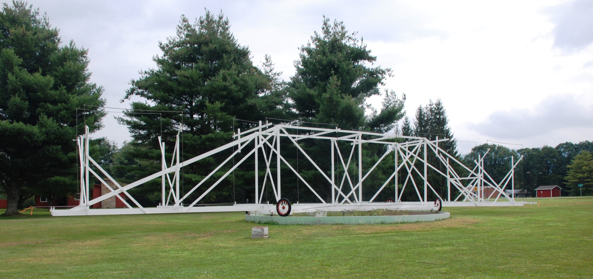

| Home |
| Contact |
| Projects |
| Resources |
| Partners |
 | ||||
Image courtesy NSF / GBO / AUI |
||||
|
|
HomeOpen Source Radio Telescopes (OSRT) is a database and collaboration center for radio astronomy telescope construction at any level. Join us in our mission to make radio astronomy accessible to everyone — participate by building your own telescope, sharing open-source radio telescope designs and code, and engaging in the OSRT community!OSRT Goals1) Provide a collaborative, open-source collection of ideas and methods for educational radio telescope construction.2) Share radio astronomy curricula and other materials that are accessible to anyone from elementary school to graduate school and beyond! 3) Promote discussions about making digital signal processing and radio astronomy hardware more widely accessible by using free GNU Radio software with off-the-shelf or easily obtainable, low-cost electronic components. |